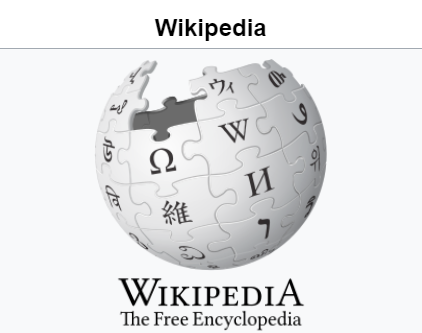

We are using blockquotation below:
From Wikipedia, the free encyclopedia This article is about the online encyclopedia. For Wikipedia's home page, see Main Page. For the primary English-language Wikipedia, see English Wikipedia. For other uses, see Wikipedia (disambiguation). Wikipedia An incomplete sphere made of large, white jigsaw puzzle pieces. Each puzzle piece contains one glyph from a different writing system, with each glyph written in black. The Wikipedia wordmark which displays the name Wikipedia, written in all caps. The W and the A are the same height and both are taller than the other letters which are also all the same height. It also displays Wikipedia's slogan: "The Free Encyclopedia". The logo of Wikipedia, a globe featuring glyphs from various writing systems Screenshot Type of site Online encyclopedia Available in 330 languages Country of origin United States Owner Wikimedia Foundation Created by Jimmy Wales Larry Sanger[1] URL wikipedia.org Commercial No Registration Optional[a] Users >286,838 active editors[b] >114,064,721 registered users Launched January 15, 2001 (23 years ago) Current status Active Content license CC Attribution / Share-Alike 4.0 Most text is also dual-licensed under GFDL; media licensing varies Written in LAMP platform[2] OCLC number 52075003 Wikipedia[c] is a free content online encyclopedia written and maintained by a community of volunteers, known as Wikipedians, through open collaboration and the wiki software MediaWiki. Wikipedia is the largest and most-read reference work in history,[3][4] and is consistently ranked among the ten most visited websites; as of April 2024, it was ranked fourth by Semrush,[5] and seventh by Similarweb.[6] Founded by Jimmy Wales and Larry Sanger on January 15, 2001, since 2003 Wikipedia has been hosted by the Wikimedia Foundation, an American nonprofit organization funded mainly by donations from readers.[7]

Owned by
Wikimedia Foundation